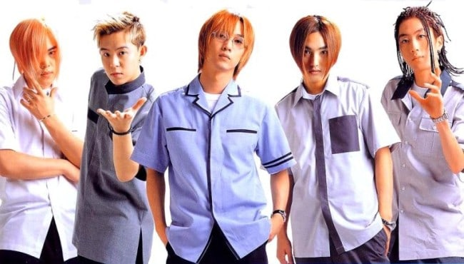
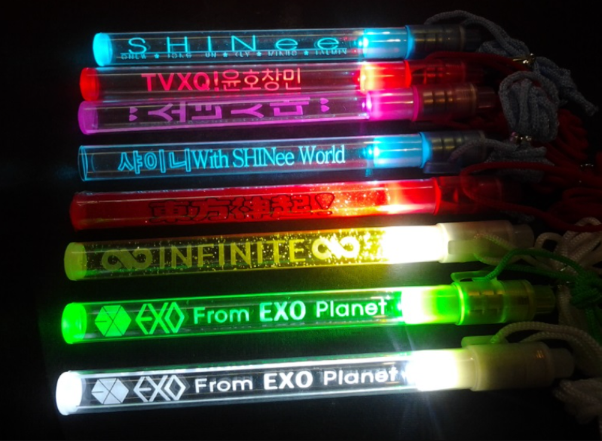
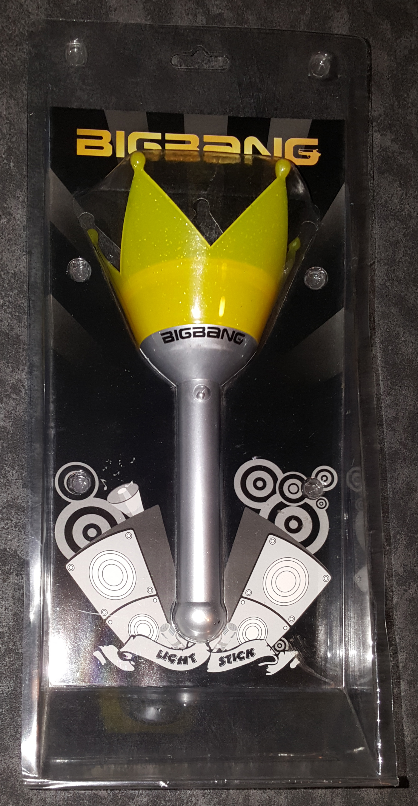
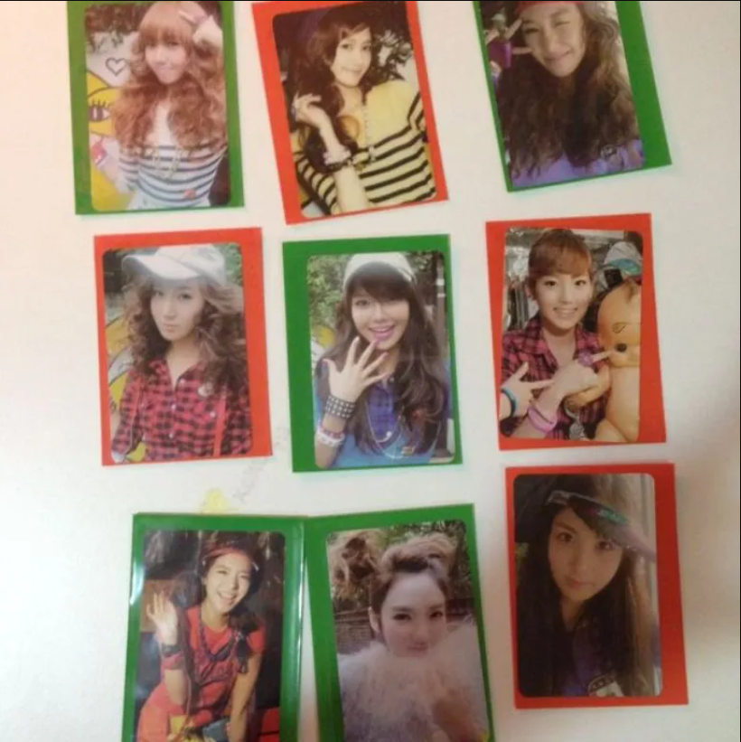

El K-pop como género musical se ha ido expandiendo poco a poco en el mundo, adquiriendo cada vez más fuerza en el mercado global. Desde la segunda generación (grupos surgidos entre 2003 y 2011), los artistas comenzaron a salir de Corea del Sur en búsqueda de ganancias en mercados globales. Pero, ¿en qué momento la industria agarra fuerza en el exterior?
AHORA TE ENCUENTRAS EN LA FILA VIRTUAL
Estás en línea para K-ERA. Cuando sea tu turno, tendrás 15 minutos para entrar al sitio web.
¿Qué es esto?
Última actualización del mensaje: ¿Qué era el K-POP hace 35 años?
¡Bienvenidos/as a K-ERA! Un espacio dedicado a todos los fanáticos del K-pop. Aquí podrás explorar la evolución de esta industria desde sus inicios hasta el día el hoy. Además, de poder encontrar respuesta a todas las preguntas que alguna vez como fan (o sin ser fan, pero motivado por la curiosidad) nos hemos cuestionado sobre el K-pop y su evolución.
HISTORIA DEL K-POP
¡Ya queda menos para que entres!
Última actualización del mensaje: Un viaje al pasasado
El concepto original se remonta al año 1985 cuando el misionario estadounidense Henry Appenzeller comenzó a enseñarle a sus estudiantes canciones folk británicas y estadounidenses con letras coreanas. Este hito fue muy relevante porque hasta esa época, la población coreana no había tenido mucho contacto con el mundo occidental debido a la distancia geográfica, pero también se atribuyen factores propios como la guerra de Corea y la división en dos de la península.
En la década del 90 apareció el primer grupo de K-pop, Seo Taiji and Boys, el cuál participó en un show de talentos, pero obtuvo el puntaje más bajo entre todos los participantes.
Sin embargo, con su primera canción, llamada Nan Arayo (I Know) alcanzaron el primer lugar en las listas de singles coreanos, y se mantuvieron en el número uno por 17 semanas consecutivas. Este grupo tenía la particularidad de mezclar el estilo americano con su propia cultura mientras cantaban sobre temas de los cuales nunca se había cantado: moda, presión social, y la realidad del sistema educativo coreano, entre otros.
Seo Taiji and Boys se separaron en 1996, mismo año en que tres estudios musicales aparecieron en la escena: SM Entertainment, JYP Entertainment y YG Entertainment. Estos estudios, conocidos como los "Big Three", comenzaron a crear grupos de ídolos K-pop. El fundador de SM Entertainment convocó a cinco cantantes y bailarines, para luego entrenarlos para ser el primer grupo de ídolos de K-pop, el grupo H.O.T.
Algunos de los hitos que marcaron la carrera de H.O.T. es que fueron el primer grupo en promocionarse y debutar en China. También, son el primer grupo en tener sasaengs (fans obsesionadas), y por cinco años tuvieron el título de “los hermanos menores de la nación”.
SEO TAJI AND BOYS
1992-1996
Vocalista: Seo Taiji
Corista: Yang Hyun Suk
Corista: Lee Juno

H.O.T.
1996-2001
Líder: Seo Jun
Raperos: Woo Hyuk
Vocalista: Tony An
EXPANSIÓN DEL K-POP
¡Ya casi estás ahí!
Última actualización del mensaje: El K-pop en la actualidad
El género se ha ido expandiendo de a poco en el mercado global, ya no solo dominando mercados asiáticos, sino también adquiriendo fuerza en América Latina, Europa y Estados Unidos, donde grupos como BTS y BLACKPINK han encabezado rankings como Billboard y han realizado colaboraciones con grandes exponentes como Coldplay, Lady Gaga, Dua Lipa o Rosalía.
Los grupos cada vez realizan giras más ambiciosas, explorando la capacidad de su público con conciertos en grandes estadios internacionales, en muchos casos logrando llenar capacidades por sobre los 50.000 asistentes.
Si bien ha habido presentaciones de diversos exponentes del género en casi todos los continentes, aún falta explorar mercados como el de África y partes de Medio Oriente, donde existe un creciente interés por "la ola coreana", pero aún no se han desarrollado estrategias sólidas de promoción, giras o colaboraciones culturales que potencien esa conexión.
Una de las particularidades de la industria del K-pop son las llamadas generaciones. Pero ¿sabes por qué existen?:
Las generaciones en el K-pop existen para representar la evolución de esta industria, clasificando a todos los grupos que debutaron en un cierto periodo de etapas de desarrollo. Las generaciones no solo marcan un cambio de los grupos y artistas que están activos (es decir, continúan sacando música), sino que también demuestran un cambio en los estilos musicales, estrategias de marketing, globalización del género y el impacto cultural.
IMPORTANTE: el cuándo comienza y termina una generación no está determinado por una fecha o condición, y la transición entre las nuevas generaciones puede ser confusa porque en las primeras existía una diferencia “evidente”.
Características de cada generación:
Primera generación (1990-2002): También conocido como la “generación de las leyendas” porque es cuando nace y se desarrolla esta industria.
Segunda generación (2003-2011): Esta generación se considera la “Edad de Oro” porque comienzan los primeros pasos de la expansión global del género. Además, que sentaron las bases de costumbres que existen dentro de esta industria. Por ejemplo, las photocards con Girls´ Generation, los lightsticks con Big Bang, y los dancepractice con SHINee.
Tercera generación (2012-2017): Es recordada como aquella época en la cual el género se expandió mundialmente y la cual le ha dado la fama, en gran parte por el uso de redes sociales y el continuar con los cambios de la generación pasada al comenzar a explorar géneros más allá del pop clásico para comenzar a incursionar en estilos como el techno, rock, house tropical, etc.
Cuarta generación (2018-2022): Es la generación más difusa porque no existe un consenso en la fecha o condición que marque su inicio, porque mientras algunos medios hablaban ya de esta generación mientras que la generación pasada aún era dominante. Sin embargo, varias personas afirman que no es posible comparar a los grupos que debutaron a partir de 2017-2018 con aquellos grupos de inicio de década.
Con esto claro, lo que caracteriza a esta generación es un fuerte uso de medios digitales, y que los grupos se dirigieron desde muy sus inicios al mercado musical mundial. Sin embargo, podemos decir que esta generación es la más competitiva que las anteriores porque, aunque hay varios grupos que alcanzan la cima en listas, muchos otros se disuelven en poco tiempo. De hecho, aquí entre grupos interactúan menos públicamente, a diferencia de sus antecesores que compartían eventos y podíamos verlos interactuar.
Quinta generación (2023-presente): la más reciente generación, pero de la cual también se duda de su inicio al mantener elementos de continuidad que la conectan a la anterior generación. Marcado por grupos que buscan innovar y conectar con una audiencia global digitalizada, su enfoque está centrado en las plataformas digitales y el metaverso, adaptándose a nuevas formas de consumo y promoción de la música. Es una generación que está incursionando en sonidos más alejados del “K-pop tradicional", buscando salir a los mercados globales apenas debutan. Ha generado polémica por la calidad musical (considerada más pobre que en generaciones pasadas) y el desempeño de algunos de sus artistas (sobreutilización de playback, pereza en la ejecución de coreografías y, en algunos casos, poca habilidad vocal). Esto contrasta con generaciones anteriores, donde el foco en entrenamiento riguroso era una marca registrada de la industria.
Algunos grupos de cada generación:
Carrusel de fotos de hitos:



<
>
SHINee practicando su canción debut Replay (누난 너무 예뻐) en 2008
EL AUGE DEL K-POP: LOS AÑOS BOOM DE GRUPOS MASCULINOS Y FEMENINOS, MIENTRAS LOS GRUPOS MIXTOS NOS DICEN ADIÓS
Hoy podemos afirmar que el Kpop dejó de ser un “simple fenómeno” o una moda pasajera, sino que en un poco más de 35 años ha conseguido una expansión a nivel global, trascendiendo fronteras e idiomas, para convertirse en una industria musical consolidada pero que también ha influido en aspectos culturales, sociales y económicos para Corea del Sur.
Pero ¿cómo fue el inicio del Kpop?
En la década de los noventa, el Kpop daba sus primeros pasos al debutar en 1990 a los primeros tres grupos, predominantemente masculinos. Entre 1990 y 1999, predominaban los grupos masculinos y el crecimiento era moderado.
Un hito importante en estos años fue el grupo “Seo Taiji and Boys”, quienes sentaron las bases en esta industria con su debut en 1992. Este trío revolucionó el escenario musical coreano al combinar géneros occidentales como el hip-hop, el rock y el techno y también cantar sobre temas como los problemas de la juventud, la presión social, la realidad del sistema educativo coreano, entre otros. Fue este trío quienes marcaron el inicio de la cultura idol, en gran parte, como la conocemos hoy.
Durante este periodo, los grupos mixtos intentaban abrirse un camino en esta nueva industria, pero su presencia era baja y poco significativa. A diferencia de los grupos masculinos, como H.O.T. quienes fueron los primeros en promocionarse y debutar en China, además de ser el primer grupo en dar un concierto en el Estadio Olímpico de Seúl.
Los datos nos indican que no fue hasta finales de la década que surgieron los primeros grupos femeninos dentro de esta industria. Pero, el reflejo dentro de esta primera década es que el K-pop estaba dando sus primeros pasos para convertirse en lo que conocemos hoy.
Década de los 2000 y el despegue femenino
Con el inicio de la década de los 2000, los datos comienzan a mostrarnos un aumento en el número de grupos que debutaban por año. Pero, fue en 2009 cuando el K-pop comienza su boom explosivo, el cual se ha mantenido dentro de todo, constante. Es en este período cuando los grupos femeninos comienzan a igualar, e incluso superar en ciertos años, a sus pares masculinos. Pero el año que marcó la mayor cantidad de debuts de grupos femeninos fue en 2014 donde se registraron 50.
También, los grupos mixtos, continuaron presentes durante esos años, pero a diferencia de sus pares, su peak de debuts fue seis grupos en 2010.
Tomando en consideración el contexto, este crecimiento no es casual. Sino que coincidió con el inicio de la globalización del K-pop, impulsada por factores como:
El Hallyu: La "Ola Coreana" (Hallyu) comenzó a ganar notoriedad desde principios de los 2000, pero fue en 2010 cuando alcanzó un punto de inflexión. La popularidad de los dramas y películas coreanas abrió el camino para la música K-pop en mercados internacionales, como el sudeste asiático, China, Japón, y finalmente, Europa y América.
Cambios en la industria musical global: La crisis de la industria musical en 2010, debido a la caída de ventas de discos físicos y el auge de la piratería, llevó a una transición hacia los servicios de streaming. El K-pop, con su fuerte enfoque en la producción visual y audiovisual (videos musicales y coreografías) reunía las características para adaptarse es estas nuevas formas de consumo digital de música.
Estrategias de marketing: Con la popularización de plataformas como YouTube, y la consolidación de las Big Three (SM, YG y JYP). Estas empresas destacaron por su imagen visualmente atractiva, videos musicales de alta calidad, coreografías intensas y conceptos visuales llamativos, atrayendo a una audiencia internacional que consumía música de forma más visual que nunca.
Factores económicos: En 2010, la economía de Corea del Sur experimentó un fuerte crecimiento, con una tasa de expansión del PIB, que se debió a un aumento en las exportaciones y consumo privado, que estuvo motivado por un intento de recuperación de la crisis financiera mundial del 2008. Gracias a este aumento, se pudo realizar una mayor inversión en la producción y promoción del K-pop.
Actualidad: ¿saturación o reinvención?
A través del gráfico podemos ver que los años de boom fueron en 2016 y 2017 (con casi 100 grupos debutando por año si contamos femeninos, masculinos y mixtos). Sin embargo, también se registra una pequeña baja entre 2018 y 2022, aunque podemos atribuirlo a factores como: una saturación del mercado, sobre todo durante la tercera generación (2012-2017), lo que complicó la competencia entre grupos para 2018, y las agencias comenzaron a darse cuenta de que un exceso de grupos podría perjudicar la relevancia de nuevos debuts.
Las empresas, están optando por concentrar sus recursos en sus grupos más establecidos, que permite mantener una presencia constante y asegurar la longevidad de sus artistas. Por ejemplo, varios grupos icónicos de las generaciones pasadas continúan sacando música, realizando giras, etc.
Por otro lado, debido a cambios en tendencias musicales, el K-pop ha comenzado a fusionarse más con otros géneros musicales y a experimentar con estilos menos estereotípicos, lo que sugiere que la exploración de nuevos sonidos y conceptos ya no depende tanto de la creación de nuevos grupos, sino de la colaboración entre artistas establecidos (en su gran mayoría, artistas norteamericanos) o proyectos más experimentales.
Conclusiones
Luego de este breve repaso por la evolución del K-pop a través del número de grupos por año, podemos entender cómo aquella industria en los noventa daba sus primeros pasos, hoy es una industria consolidada a nivel mundial que da un paso más allá de ámbitos económicos sino también culturales al abrir una puerta a conocer su país a través de sus artistas.
El K-pop, nuevamente, lo decimos no es una moda pasajera, sino una industria que irrumpió en mercados más consolidados y con una diferencia de idioma. A partir de la segunda generación observamos un aumento en el número de grupos como una respuesta a la demanda o misma ambición (lo cual no es malo) por consolidarse y establecerse como un mercado al cual hay que prestar atención porque en sus casi 35 años de historia ha sabido adaptarse a los cambios culturales y musicales mundiales.
INCLUIR VIS EN HTML
SALIDA AL EXTRANJERO DEL K-POP
En un mundo cada vez más globalizado, la fusión de culturas se ha convertido en una característica cotidiana de la vida moderna. Géneros musicales como el K-pop se han expandido con rapidez más allá de sus fronteras de origen. Pero, ¿cuándo exponentes de este género comenzaron a salir de Corea?
En 1999, el grupo H.O.T. realizó uno de los primeros conciertos de K-pop fuera de Corea del Sur, presentándose en el Estadio de los Trabajadores de Beijing, en China. Aunque fueron pioneros en llevar el género al extranjero, en ese momento el K-pop aún no mostraba señales claras de expansión global. Aun así, este evento es considerado un momento clave en el surgimiento del Hallyu ("Ola Coreana").
A comienzos de abril de 2003, la cadena japonesa NHK emitió el drama coreano Winter Sonata (Sonata de Invierno), que se convirtió en un fenómeno cultural, especialmente entre el público femenino japonés. Ese mismo año, la solista BoA, quien había lanzado su primer álbum en japonés en 2002, comenzó a posicionarse en los primeros lugares de los rankings musicales en Japón. Poco después, el grupo masculino TVXQ debutó en ese país, consolidando el interés en la música coreana. Estos artistas fueron claves en el proceso de masificación del K-pop dentro del mercado japonés.
BoA fue la primera artista de K-pop en realizar una gira en Japón, con su “1st Live Tour 2003 – Valenti”, seguida por TVXQ, que inició su primer tour japonés en 2006. Sin embargo, estas giras estaban centradas principalmente en sus lanzamientos en japonés, por lo que aún no se promocionaba el K-pop como un producto cultural coreano global, sino como parte de la industria pop japonesa.
En 2007, el solista Rain marcó un nuevo hito al incluir Japón en su gira mundial “Rain’s Coming”, con conciertos en Tokio y otras ciudades. A diferencia de giras anteriores, su espectáculo se presentó abiertamente como parte del fenómeno del K-pop, y también incluyó presentaciones en Estados Unidos (Nueva York y Las Vegas) y Alemania (Berlín), posicionándolo como una de las primeras estrellas globales del género y una figura central en la expansión internacional del Hallyu.
En 2009, el K-pop dio un paso importante en Estados Unidos con el grupo femenino Wonder Girls, quienes lanzaron la versión en inglés de su hit “Nobody”. Ese mismo año, fueron teloneras de la gira mundial de los Jonas Brothers, aumentando la visibilidad del K-pop en el mercado occidental. A partir de ese momento, más grupos comenzaron a explorar mercados alejados de Asia.
En 2011 se dio el primer paso para la incursión del género en Europa y América Latina, con conciertos como “SMTOWN Live in Paris", llevado a cabo en Francia durante junio que tuvo a TVXQ, Super Junior, Girls’ Generation (SNSD), SHINee, f(x), BoA y Kangta, y "JYJ World Tour Concert" del grupo masculino JYJ llevado a cabo en Brasil durante septiembre.
VISUALIZACIÓN DANI 2
Actualmente es cada vez más frecuente que los grupos y solistas realicen giras en el extranjero, cada vez habiendo más y más conciertos fuera de Corea, como muestra el gráfico. El único año que no hubo muchas actividades fue en 2021, producto de la Pandemia de COVID-19, pero el género ha mostrado su aumento de actividades exponencialmente a través de los años, consolidándose de a poco como un fenómeno global que trasciende fronteras culturales y conecta a millones de fans alrededor del mundo.
EXPLICACIÓN DEL HALLYU
El Hallyu, también conocido como “Ola Coreana”, es un termino que hace referencia a la popularidad de la cultura coreana a nivel global gracias a la cultura pop, entretenimiento, música, series, películas, moda y cosmética (maquillaje y skincare).
Este fenómeno ha sido un método silencioso para la propagación del “soft power” coreano, es decir, la capacidad del país para atraer y generar influencia a través del atractivo que resulta para otros países su cultura. Gracias al Hallyu, la imagen pública de Corea se ha transformado de una percepción negativa (principalmente por el machismo y homofobia) a ser percibida como una sociedad abierta y democrática, pero podemos cuestionarnos sí realmente, y en la práctica son una sociedad abierta.
Este movimiento no solo ha generado beneficios económicos significativos. El mismo gobierno coreano ha reconocido el potencial de la Ola Coreana para desarrollar e impulsar su economía, sino que también han apoyado activamente la industria de los medios de comunicación y entretenimiento para exportar su cultura. Esto lo podemos observar claramente, cuando luego de un éxito mundial de un k-drama los turistas visitan los lugares de grabación, entre otros. Por ejemplo, luego del estreno de When Life Gives You Tangerines (Cuando la Vida Te da Mandarinas) muchas personas se interesaron por las haenyeo de Jeju, quienes son buceadoras y lo hacen sin ningún equipo de oxígeno. Estas buceadoras son reconocidas como Patrimonio Cultural Inmaterial de la Humanidad por la UNESCO.
Pero ¿cuáles son los hitos claves del Hallyu?
Fundamentos Económicos: Tras la Guerra de Corea (1950-1953), el país se encontraba en una situación de pobreza. Sin embargo, gracias a un proceso de reconstrucción enfocado en la educación y la industrialización, y la inversión de grandes empresas en la industria nacional, Corea del Sur experimentó un rápido crecimiento económico, conocido como el "Milagro del Río Han". Este desarrollo permitió al país enfocar recursos en elementos no-tangibles como la cultura.
Inversión en la Industria Cultural: El gobierno coreano ha invertido recursos, tanto públicos como privados, en la exportación de elementos culturales3. Un paso clave fue la creación de la KOCCA (Agencia de Cultura y Contenido Coreana) en 2001, bajo el Ministerio de Cultura y Turismo. A esta agencia se le asignó un presupuesto anual significativo para financiar empresas culturales, lo que impulsó el desarrollo del país como un centro cultural asiático.
Auge de los K-Dramas (mediados de los años 90): Los dramas coreanos fueron el primer producto cultural en impulsar el Hallyu. Ganaron popularidad en China a mediados de los 90, ya que los consumidores buscaban alternativas a las series estadounidenses. Las exportaciones de dramas coreanos a China aumentaron un 80.3% entre 1994 y 1995.
Explosión del K-Pop (post-1997): Después de la crisis financiera de 1997, el gobierno coreano inyectó fondos para promover la música pop coreana en el extranjero, especialmente en China, buscando nuevas fuentes de ingresos4. Agencias como SM Entertainment fueron pioneras en campañas de marketing digital, utilizando plataformas como YouTube para alcanzar audiencias internacionales. Aquí destacamos dos hitos importantes: "Gangnam Style" de PSY que se convirtió en un fenómeno global sin precedentes, rompiendo récords de visualizaciones en YouTube y llevando el K-pop a una audiencia mundial. Además, el alcance global que alcanzó BTS a partir 2017 cuando obtienen sus primeros logros en el mercado estadounidense.
Este fenómeno viene irrumpiendo con fuerza hace al menos tres décadas como se notar en los hitos relevantes, y ha sido mucho más grande de lo que pensó cuando llegó a mercados que no estaban en los planes, como América Latina y Medio Oriente. Sin embargo, a pesar del éxito que representa, ha enfrentado ocasionalmente reacciones negativas en Asia, como acusaciones de "invasión cultural" que ha llevado a algunos gobiernos a tomar medidas para proteger sus propias industrias de entretenimiento.
EL K-POP Y JAPÓN: EL MERCADO MÁS EXPLORADO
El K-POP, tal como dice su nombre, es un género de música que surge desde Corea del Sur (“Korean Pop [Pop Coreano]”). ¿Pero es realmente Corea el público más explorado por el género en temas de concierto?
VISUALIZACIÓN DANI 1
Como muestran los datos, Japón resulta ser el mercado con más conciertos de K-POP registrados, lo que demuestra que es uno de los mercados más tentadores para visitar por los grupos de las diversas generaciones.
SHINee es un fiel ejemplo de cómo una boyband coreana sienta bases en la industria japonesa, con 78 conciertos realizados en dicho país. El legendario grupo debutó oficialmente en Japón en 2011 bajo el sello EMI Music Japan con una versión en japonés de su exitoso sencillo "Replay", que rápidamente se posicionó en los rankings de Oricon. Desde entonces, han lanzado múltiples álbumes en japonés y realizado giras a gran escala, incluyendo presentaciones en el icónico Tokyo Dome, consolidando una base de fans sólida y leal. SHINee ha logrado captar al público japonés no solo por su talento y carisma, sino también por su dedicación al idioma y la cultura local, ofreciendo entrevistas, conciertos y contenido exclusivo en japonés. Esta estrategia de adaptación cultural, junto con su estilo musical pulido y performances energéticas, ha sido clave en su éxito y en la expansión del K-pop en Japón.
¿Pero qué hace a Japón atractivo para que los grupos vuelvan a visitar?
Según datos de la Federación Internacional de la Industria Fonográfica, Japón ha ocupado en los últimos años el segundo lugar en tamaño de mercado, solo detrás de Estados Unidos.
¿Pero por qué entonces no es Estados Unidos el mercado con más conciertos, sino el segundo?
Eso se debe a la proximidad geográfica. Mientras que los grupos tienen que viajar casi diez mil kilómetros para llegar al país norteamericano, considerando precios más elevados de pasajes y más tiempo de traslado, Japón les queda “al lado”, lo que resulta más económico y conlleva menos tiempo “perdido” en traslado. Además, al ser países más próximos geográficamente hablando, hay más cantidad de vuelos diarios.
Otra cosa que hace que la industria ponga sus ojos en Japón es que es uno de los pocos países donde el formato físico (CDs, DVDs, Blu-ray) sigue siendo un formato dominante. Según cifras de Recording Industry Association of Japan (RIAJ) las ventas anuales físicas son muy altas y, al K-POP vender mucho lo físico (con diversas versiones de álbumes, photocards, etc) resulta ser algo muy positivo.
También las fanbases (base de fans) japonesas son conocidas por ser extremadamente leales y dedicadas, mostrando un apoyo incondicional a los grupos que siguen, incluso en momentos difíciles (como hiatus [pausa de actividades] y escándalos] o cuando ya no son una “moda” (Ejemplo: en Estados Unidos pasa mucho que se siguen grupos más por moda que por gusto, las personas perdiendo el interés una vez ya no son tendencia, a diferencia de Japón que siguen ahí mostrando su apoyo).
Los grupos de K-POP han utilizado la técnica de adaptar sus canciones al japonés para adentrarse en el mercado de forma más rápida, pero posteriormente han comenzado a crear canciones originales en el idioma, lo que también genera cierta cercanía con el público de dicho país.
¿Y Latinoamérica?
Lamentablemente para muchos fans latinoamericanos, los grupos de K-POP aún no han explorado demasiado este mercado, a diferencia de otros como China y Europa.
Si antes hablábamos de lejanía con Estados Unidos, resulta un mercado mucho más lejano Latinoamérica, por lo que los riesgos de acercarse a esta parte del mundo son altos al considerar temas de costo y tiempo de viaje.
A pesar de eso, Super Junior parece amar LATAM, ya que han hecho más de 11 conciertos en diversos países latinoamericanos y han señalado en varias entrevistas que les gusta mucho el público latino por su gran energía y pasión.
Esta boyband fue uno de los primeros grupos de K-pop en establecer una conexión directa y sostenida con Latinoamérica, marcando un precedente para la expansión del género en la región. Desde su primera visita en 2013 con la gira “Super Show 5”, donde agotaron entradas en países como Chile, Brasil, Argentina, México y Perú, el grupo demostró el enorme potencial del mercado latino. Su carisma, cercanía con los fans y esfuerzos por comunicarse en español (incluso lanzando canciones con palabras en este idioma, colaborando con artistas latinos como Leslie Grace y Reik, y también mencionando países de la zona en sus shows) ayudaron a crear una comunidad ELF (su fandom) sólida en el continente. Además, Super Junior fue el primer grupo de K-pop en presentarse en la Teletón chilena y uno de los primeros en realizar giras completas por Sudamérica, abriendo el camino para otros artistas coreanos que buscan explorar este mercado.
MERCADOS MENOS EXPLORADOS
Si Japón, China y Estados Unidos son los mercados más explorados por los idols de K-pop, ¿cuáles son aquellos que parecen ser más desconocidos por la industria musical coreana?
Países asiáticos como Arabia Saudita y Emiratos Árabes parecen procesar la “Ola Coreana” con mayor lentitud, ya que son menos los grupos que han llegado a esta zona.
El primer grupo de K-pop que se presentó en Arabia Saudita fue BTS en 2019, como parte de su gira “Love Yourself: Speak Yourself”, hito que fue parte de un ambicioso plan de modernización cultural del país, enmarcado en el programa Vision 2030, que busca diversificar la economía saudita y abrirse a nuevas expresiones artísticas. Después de esto, ATEEZ, Super Junior, SF9, NewJeans y Dreamcatcher (entre otros) se han presentado en festivales y conciertos en Riad y otras ciudades. De hecho, se llevó a cabo una versión del festival KCON en dicho país en 2022, mostrándose el país como un nuevo mercado a explorar.
En Emiratos Árabes sucedió una cosa similar, donde EXO en 2018, con el concierto Dubai Fountain Show (donde su canción "Power" se convirtió en la primera canción coreana en formar parte del espectáculo musical del Burj Khalifa), fue el grupo que abrió el camino para que otros grupos como Stray Kids y NCT 127 se presentaran en dicho país.
Otra zona como África aún permanece en gran medida fuera del circuito oficial de las grandes giras del K-pop. Si bien países como Sudáfrica, Egipto, Nigeria y Kenia cuentan con comunidades activas y organizadas, los conciertos han sido escasos y generalmente vinculados a festivales culturales organizados por embajadas o centros coreanos. Un caso destacado fue el de KARD, uno de los primeros grupos en realizar un showcase en Johannesburgo en 2017, y los eventos K-culturales en Pretoria y El Cairo, que han incluido presentaciones de artistas coreanos como LEENALCHI. No obstante, África sigue siendo un territorio poco explorado por la industria musical coreana, a pesar del entusiasmo de sus seguidores, lo que revela un potencial latente que aún no ha sido plenamente aprovechado por el K-pop global.
En la gran mayoría de casos, la ausencia de eventos de K-pop en estos mercados podría deberse a ciertas restricciones legales y culturales, además de situaciones política y geográficas que hacen que sean países más lejanos, pero también influencia el que sean mercados mucho más pequeño en comparación al resto.
Si bien son mercados menos explorados, su interés creciente y la pasión de sus comunidades fan demuestran que el K-pop tiene el potencial de expandirse mucho más allá de los centros tradicionales. La recepción positiva en lugares como Arabia Saudita, Emiratos Árabes y diversos países africanos revela nuevas oportunidades para la industria coreana, que poco a poco comienza a mirar hacia estas regiones con mayor atención. En un panorama global cada vez más interconectado, el futuro del K-pop podría depender, en parte, de su capacidad para adaptarse a estos contextos culturales y consolidar lazos con audiencias que, aunque geográficamente distantes, comparten el mismo entusiasmo y amor por esta expresión musical.